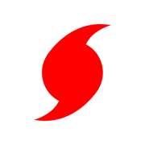
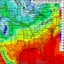
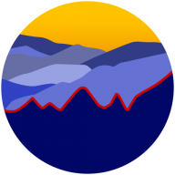
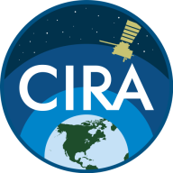
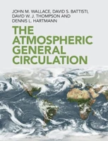
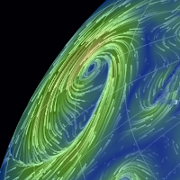
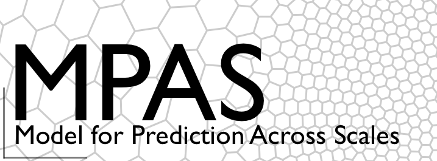

Skip to content
Home
Research
Publications
Resources
Resources
Monitoring & Forecasts
Climate Reanalyzer

Tropical Tidbits

Weathernerds
SPC
CPC
C3S Seasonal
CFSv2
BoM Oceans

NCICS Monitor
Visuals

CIRA SatLib
TC-ATLAS

AGC
NASA EO
Watch Duty

Nullschool
ERA Explorer
Data
PSL Data
Climate Indices
BoM MJO
CDS
CPC Precip
GRIB Parameters
IMERG
MERGIR
AERONET
CMORPH
NHC Best Track
Aeolus
CYGNSS
MUR SST
Models
WRF Tutorial
WRF Domains

MPAS Tutorial
CESM Tutorial
SPEAR
Isca
LBM
Barotropic QG
Others
C3S
Met Office
CCRS
SG V3
SG Reports
Climate.gov
Annular Modes
Reading Blog
Marshall–Plumb